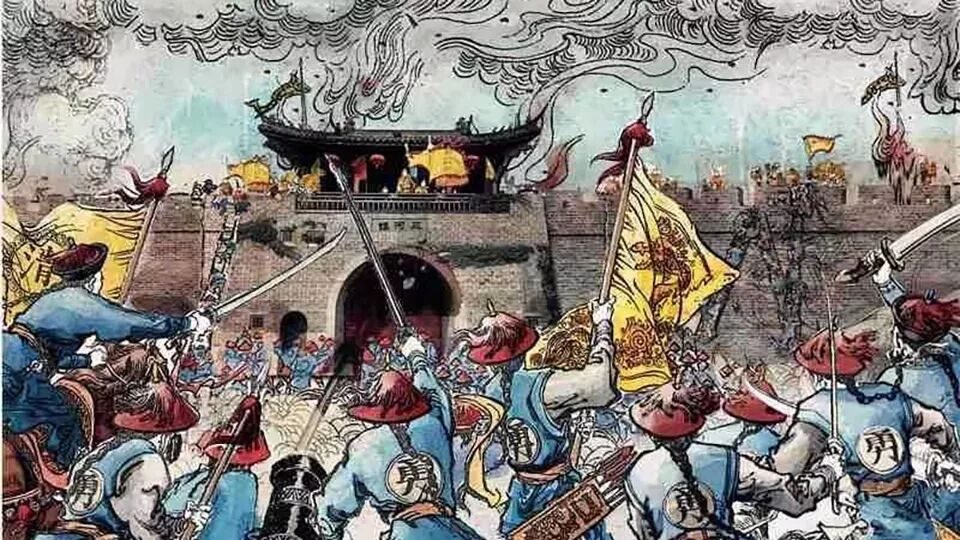
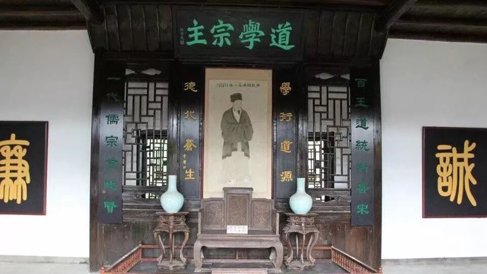

【行者无疆 言念潇湘】精品文化科普（一）

时间过得真快
不知不觉，2019只剩下最后一天了
2019年的你，过的还顺利吗？
行者酱在这里
提前祝大家新年快乐呀！
话不多说
一起来看看
第七期行者无疆
文化科普总结第一弹吧！
在时间的乱流里俯瞰往事回溯
在青砖素瓦中寻找长沙记忆
一山览光景，一城阅古今
一绣展风情，一战天下名
行者下一段旅途即将开启
在此之前
有一些人、一些事、一些景
要与你共享

01
毛泽东
毛泽东，字润之，湖南湘潭人。他是中国人民的领袖，伟大的无产阶级革命家、战略家和理论家，诗人，书法家。
他对马克思列宁主义的发展、军事理论的贡献以及对共产党的理论贡献被尊称为毛泽东思想。
“俱往矣，数风流人物，还看今朝！”

02
湘军
湘军是晚清时对湖南地方军队的称呼，或称湘勇，是由清朝将领曾国藩组织的镇压太平军的军队。
在平定太平天国、西北回乱以后，湘军屡次参加了抵抗外侮的战争，包括左宗棠收复新疆，镇南关、台湾抗法等。
03
黄克诚
黄克诚，湖南永兴人，曾担任中共中央军委秘书长，国防部副部长等职务
早年深入部队调查研究，恢复政治委员制度。中年率兵3万余人挺进东北，创建革命根据地。晚年年迈体衰、双目失明，仍坚持完成了拨乱反正的工作。

04
周敦颐

周敦颐，字茂叔，北宋著名思想家、哲学家、文学家、教育家，著有《太极图说》《爱莲说》等。
周敦颐是中国理学的开山祖师，其学术思想被称为“上承孔孟，下启程朱”，千百年来影响中华文明甚深。
05
岳麓书院
岳麓书院坐落于湖南长沙湘江西岸的岳麓山脚下，与应天书院、嵩阳书院、白鹿洞书院并称中国四大书院。
作为世界上最古老的学府之一，岳麓书院之学脉自创立以来便亘古绵延。三湘人才辈出，完美诠释了何为“千载飞逝而弦歌不绝”。
06
凤凰古城
城内保存有文昌阁、回龙阁吊脚楼群、沈从文故居等有较高历史文化价值的风土建筑，是湖南十大文化遗产之一。
凤凰古城位于湖南省湘西土家族苗族自治州的西南部，绵亘逶迤于武陵山脉深处，倚山而筑，环以石墙，濒临沱江，群山环抱，河溪萦回，关隘雄奇。
07
湘绣
湘绣是起源于湖南的民间刺绣，主要以纯丝、硬缎、软缎、透明纱和各种颜色的丝线、绒线绣制而成，距今已有两千多年的历史。
绣品形象生动逼真，曾有“绣花花生香，绣鸟能听声，绣虎能奔跑，绣人能传神”的美誉。
08
剁椒鱼头
剁椒鱼头属湘菜系。以剁辣椒的“咸”和“辣”沁入鱼头，风味独具一格。菜品色泽红亮、味浓、肉质细嫩。肥而不腻、口感软糯、鲜辣适口。因此，剁椒鱼头也被称作“鸿运当头”、“开门红”。


星城尽带沧桑
层林浸染冬日寒霜
极目望潇湘
百舸争流竞湘江
汉韵楚风应犹在，正谱华章
指点江山，文字激昂
行者无疆再启航
来源 | 行者无疆实践团
文字 | 黄玲
排版 | 吕丰元
审核 | 段智然 康艳虎
行者无疆实践团
QQ：2758025831

随行者一起认识世界
长按二维码